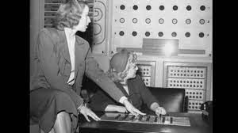
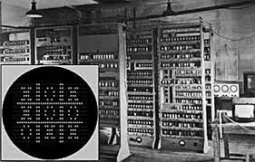
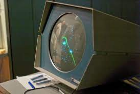

Sobre
Nesta pagina estaremos disturindo mais sobre os contudos das lores de uma das franquias mais conhecidas de games da atualidade, assim como a historia de como começou os primeiros computadores e os seus primeiros games
Mas Afinal, oque são Video Games?
Um jogo eletrônico, também chamado videojogo ou pelo anglicismo videogame, é um jogo no qual o jogador interage através de periféricos conectados ao aparelho, como controles (joysticks) e/ou teclado com imagens enviadas a uma televisão ou um monitor, ou seja, aquele que usa tecnologia de computador. O termo inglês video game, ganhou a forma aglutinada no Brasil (como videogame), tanto para se referir a videojogos, como para se referir aos consoles onde os jogos se processam

Historia
Por conta da falta de documentação é difícil de se determinar qual teria sido o primeiro jogo eletrônico criado porém a primeira menção ao que se assemelha a um videojogo datado de 1947; enquanto testavam equipamentos para o desenvolvimento de televisores e monitores, criaram um dispositivo de entretenimento ligando um tubo de raios catódicos em um osciloscópio, patenteado no ano seguinte pelos físicos Thomas T. Goldsmith Jr. e Estle Ray Mann. Inspirado na tecnologia de radares, consistia em um dispositivo analógico que permitia controlar um ponto vetorizado na tela, simulando mísseis acertando alvos, que eram simplesmente pontos fixos na tela.
Em 1949, Charlie Adama desenvolveu um programa de computador que produzia uma bolinha saltitante no computador Whirlwind. Existem poucas informações sobre esse projeto e, nem sempre é listado como contribuinte para a história dos jogos.
O jornal Times afirma, que cientista da computação britânico Christopher Strachey apareceu no Laboratório Nacional de Física com um programa de computador que simulava o jogo de tabuleiro damas para o computador Pilot ACE, em 1950.
Em 1952, O professor de ciência da computação Alexander Shafto Douglas criou o primeiro jogo gráfico para computador na Universidade de Cambrige, um simulador do jogo da velha.
Na sequência, temos mais alguns exemplos prosaicos dos antepassados dos videojogos atuais:
- Foi um dos primeiros jogos de computador e um dos primeiros jogos desenvolvidos no início da história dos videojogos, foi construído em Toronto por Josef Kates, para a Exposição Nacional Canadense de 1950. O computador, de quatro metros de altura, permitia que os participantes da exposição jogassem um jogo de tic tac contra uma inteligência artificial. O jogador entrou em um movimento em um teclado iluminado na forma de uma grade de três por três, e jogou o jogo em uma grade de luzes em cima. A máquina tinha um nível de dificuldade ajustável. Depois de duas semanas em exibição pela Rogers Majestic, a máquina foi desmontada no final da exposição e amplamente esquecida como uma curiosidade
- Em 1951 foi criado um computador chamado NIMROD, cujo propósito era executar um jogo eletrônico. Esse jogo foi batizado com o nome de Nim. Basicamente tratava-se de um simples jogo matemático, onde duas pessoas retiravam peças de uma pilha e o jogador que retirasse a última peça perdia. O NIMROD, executando o Nim, foi exibido ao público pela primeira vez em uma exposição de ciências na Grã Bretanha 
- Em 1952, um professor da Universidade de Cambridge chamado Alexander Shfto Douglas, também conhecido como A.S. Douglas, criou o que, para muitos foi, de fato, o primeiro vídeo game da história. O jogo chamava-se OXO e foi desenvolvido utilizando um computador EDSAC. O jogo era o que conhecemos hoje como "jogo da velha 
- No ano de 1955, na União Soviética, foi criado um dispositivo chamado de "Mouse in the Maze". Nele, um rato dentro de um labirinto sempre encontrava o menor caminho possível até o pedaço de queijo. A grande contribuição do jogo se deveu ao fato do dispositivo ser capaz de armazenar os dados com o menor caminho entre o rato e o queijo
- Criado em 1958 pelo físico nuclear norte-americano William Higinbotham (também conhecido por participar do Projeto Manhattan, que construiu a bomba atômica), muitos anos antes de "Space Invaders" ou Nolan Bushnell - fundador da Atari - sonharem em aparecer no mercado. "Tennis for Two" não passava de um enorme computador analógico ligado a um osciloscópio, que simulava uma partida de tênis (ou ping pong). Ele nunca teve distribuição comercial e ficou em demonstração no Laboratório Nacional de Brookhaven, Nova York, atraindo a atenção de milhares de jogadores, no dia 18 de outubro de 1958. Cada jogador segurava uma caixa, o controle, que tinha um dial (botão giratório) e um botão de pressionar. Com o dial era possível regular os ângulos de rebatida da bola, que ocorria quando o outro botão era pressionado;
- Em 1961, no Massachusetts Institute of Technology (MIT), os pesquisadores criaram o jogo Spacewar!, cujo tema era uma guerra espacial, estando o jogador no controle de uma das naves que enfrentava naves inimigas. Esse jogo foi programado em Assembly (nome da linguagem de programação de baixo nível) e executado em um computador DEC-PDP 1. A física, emulada por intermédio de complicados algoritmos, era o ponto forte de sua jogabilidade simples e divertida escrito pelos estudantes Martin Graetz, Steve Russell, e Wayne Wiitanen's em um computador DEC PDP-1 em 1961. 
Bertie the Brain:

Nim:
Oxo:
Mouse in the Maze:

Tennis for Two: